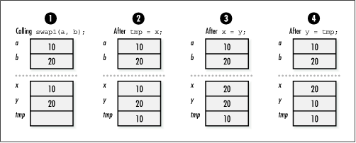
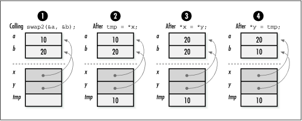
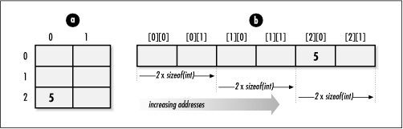
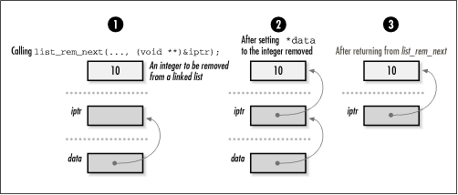

2.4 Pointers as Parameters to
Functions
Pointers are an essential part of calling
functions in C. Most importantly, they are used to support a
type of parameter passing called
call-by-reference. In
call-by-reference parameter passing, when a function changes a
parameter passed to it, the change persists after the function
returns. Contrast this with call-by-value parameter passing, in
which changes to parameters persist only within the function
itself. Pointers are also an efficient means of passing large
amounts of data in and out of functions, whether we plan to
modify the data or not. This method is efficient because only
a pointer is passed instead of a complete copy of the data.
This technique is used in many of the examples in this
book.
2.4.1 Call-by-Reference Parameter
Passing
Formally, C supports only call-by-value
parameter passing. In call-by-value parameter passing , private copies of a function's calling
parameters are made for the function to use as it executes.
However, we can simulate call-by-reference parameter passing
by passing pointers to parameters instead of passing the
parameters themselves. Using this approach, a function gets a
private copy of a pointer to each parameter in the caller's
environment.
To understand how this works, first consider
swap1, which illustrates an
incorrect implementation of a function to swap two integers
using call-by-value parameter passing without pointers. Figure
2.4 illustrates why this does not work. The function swap2 corrects the problem by using
pointers to simulate call-by-reference parameter passing. Figure
2.5 illustrates how using pointers makes swapping proceed
correctly.
void swap1(int x, int y) {
int tmp;
tmp = x; x = y; y = tmp;
return;
} |
void swap2(int *x, int *y) {
int tmp;
tmp = *x; *x = *y; *y = tmp;
return;
} |


One of the nice things about C and
call-by-reference parameter passing is that the language gives
us complete control over exactly how parameter passing is
performed. One disadvantage, however, is that this control can
be cumbersome since we often end up having to dereference
call-by-reference parameters numerous times in functions.
Another use of pointers in function calls
occurs when we pass arrays to functions. Recalling that C
treats all array names transparently as unmodifiable pointers,
passing an array of objects of type T in a
function is equivalent to passing a pointer to an object of
type T. Thus, we can use the two approaches
interchangeably. For example, function f1 and function f2 are equivalent.
int f1(int a[]) {
a[0] = 5;
return 0;
} |
int f2(int *a) {
*a = 5;
return 0;
} |
Usually the approach chosen depends on a
convention or on wanting to convey something about how the
parameter is used in the function. When using an array
parameter, bounds information is often omitted since it is not
required by the compiler. However, including bounds
information can be a useful way to
document a limit the function imposes on a parameter
internally. Bounds information plays a more critical role with
array parameters that are multidimensional.
When defining a function that accepts a
multidimensional array, all but the first dimension must be
specified so that pointer arithmetic can be performed when
elements are accessed, as shown in the following code: int g(int a[][2]) {
a[2][0] = 5;
return 0;
}
To understand
why we must include all but the first dimension, imagine a
two-dimensional array of integers with three rows and two
columns. In C, elements are stored in row-major order at
increasing addresses in memory. This means that the two
integers in the first row are stored first, followed by the
two integers in the second row, followed by the two integers
of the third row. Therefore, to access an element in any row
but the first, we must know exactly how many elements to skip
in each row to get to elements in successive rows (see Figure
2.6).

2.4.2 Pointers to Pointers as
Parameters
One situation in which pointers are used as
parameters to functions a great deal in this book is when a
function must modify a pointer passed into it. To do this, the function is passed a
pointer to the pointer to be
modified. Consider the operation list_rem_next, which Chapter
5 defines for removing an element from a linked list. Upon
return, data points to the data removed from
the list: int list_rem_next(List *list, ListElmt *element, void **data);
Since the operation must modify the pointer
data to make it point to the data removed, we
must pass the address of the pointer data in
order to simulate call-by-reference parameter passing (see Figure
2.7). Thus, the operation takes a pointer to a pointer as
its third parameter. This is typical of how data is removed
from most of the data structures presented in this book.

|